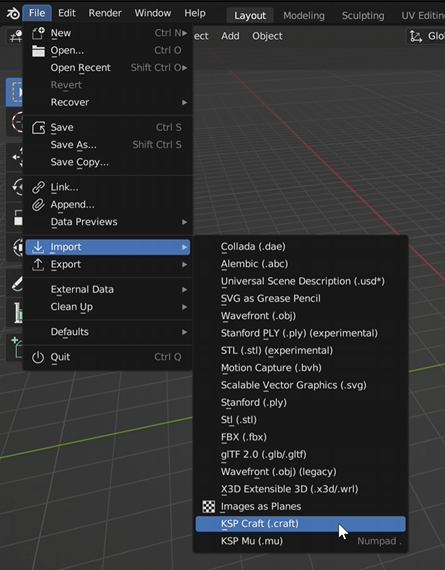
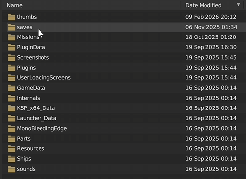
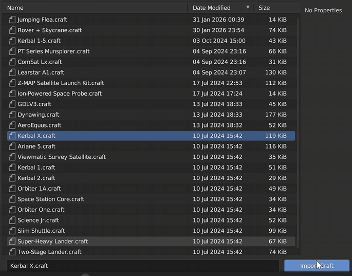
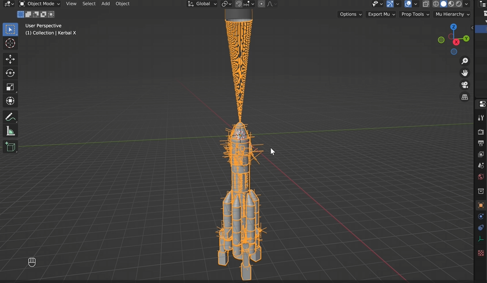
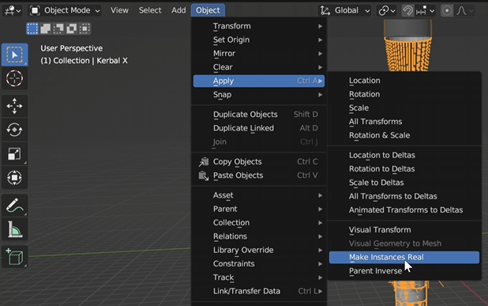
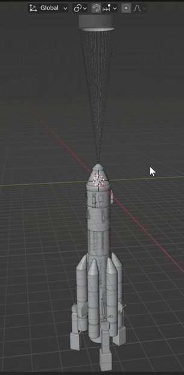
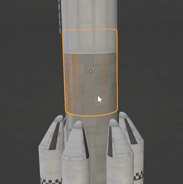
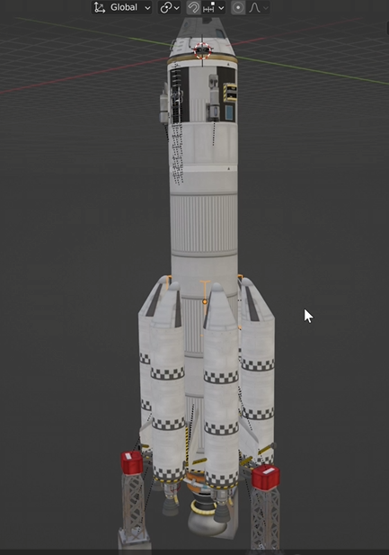

Importing a Craft File
Open the Craft Importer



Blender Version Note
Working in Different Blender Versions
At this point, you do not need to remain in Blender 3.6. You can save the imported craft file and then append it into another Blender version if you prefer.
This tutorial continues using Blender 3.6, since it is commonly used for animation workflows, but the process should work in other compatible versions as well.

Separating the Ship Parts
Converting Instances into Real Objects
When the craft first imports into Blender, it will appear as one combined object and will contain many empty objects used by the game.
To separate the parts:
- Select the imported ship.
- Click Object in the top menu.
- Choose Apply.
- Select Make Instances Real.

Removing Unnecessary Empty Objects
Cleaning Up the Scene
After separating the objects, the scene will still contain many empty objects that are not needed for animation.
Instead of deleting them one by one, you can remove them quickly using the following method:
- Click Select
- Choose Select by Type
- Select Mesh
Next:
- Click Select again
- Choose Invert Selection
- Press X to delete the selected objects

Checking Materials and Parts
Reviewing Imported Materials
Switch to Material Preview Mode to see how the craft materials were imported.
You should now see:
- Colored parts
- Engine covers
- Various materials used by the craft

Preparing the Ship for Animation
Parenting the Craft to an Empty Object
Since the craft is made up of many individual parts, animating it directly can be difficult. A simple solution is to parent the ship to a single control object.
To do this:
- Press Shift + A
- Add an Empty → Cube
- Move the empty object to the center of mass of the ship
- Press A to select all objects
- Press Ctrl + P
- Choose Parent to Object

Result
At this point you should have:
- A clean ship model
- Unnecessary objects removed
- The entire craft controlled by a single empty object